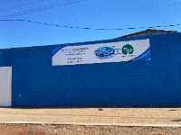
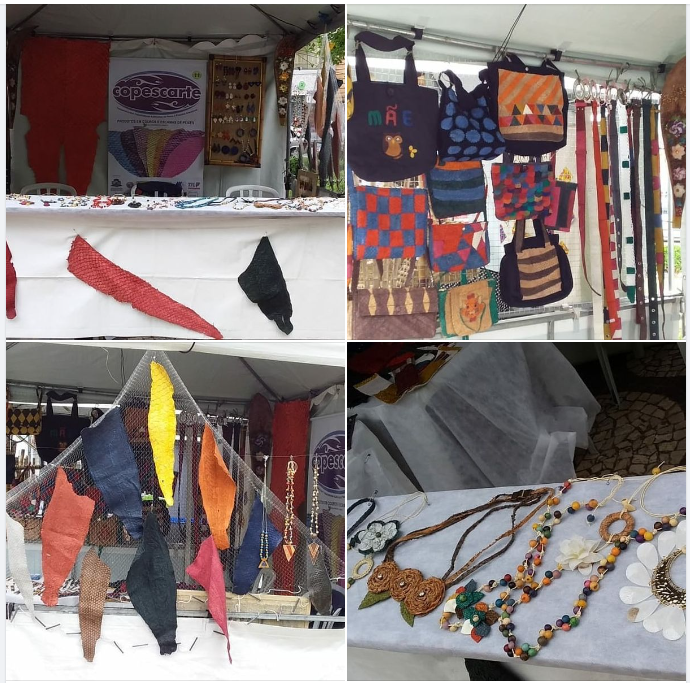
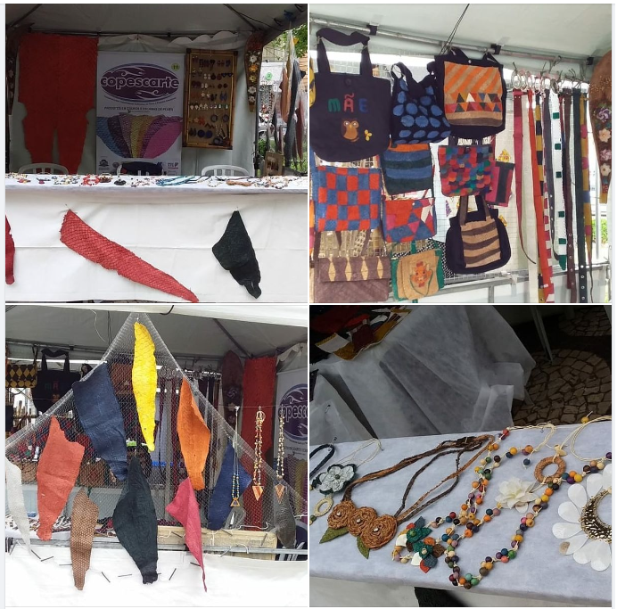

Coperativa de Artesanato em geral feito a partir de couro de peixe.
A arte que vem das águas
Localização Google Maps
A Copescarte é uma Cooperativa de Mulheres localizada no "Povoado da Platina", que trabalha com projetos sociais e reutilização da pele da tilápia, colocando as mulheres como Cooperadas e impactando confiança, empoderamento e alegria de viver. Essas mulheres são donas de casa, mães que são pais, mulheres que são arrimo da família e idosas que muitas vezes são tratadas o descarte da sociedade e pelo mercado de trabalho, por sua idade e, em alguns casos pela própria família. Segundo relatos das próprias coooperadas, são mulheres, que "na maioria dos casos tinham como companhia a DEPRESSÃO, TRISTEZA, INCAPACIDADE, DOENÇAS EMOCIONAIS E FÍSICAS, entre outras doenças e patologias. Na cooperativa, são acolhidas de uma forma simples e incentivadas a colocar todo seu potencial/coração e mente no trabalho manual liberando sua CRIATIVIDADE e ainda, aprendem a trabalhar recignificando descartes de tilápia, como a pele e a curtir essa pele para transforma-la em couro e com isso criam, de uma matéria prima que ia para o lixo, mantas para confecção de lindas bolsas, braceletes, brincos, carteiras e ainda, reciclam papéis que iam para o lixo e transformam em papel semente . E isso é só o começo de um trabalho que resgata a autoestima e confiança dessas mulheres e também, o direito de poder SONHAR!💐🥰😍
 
